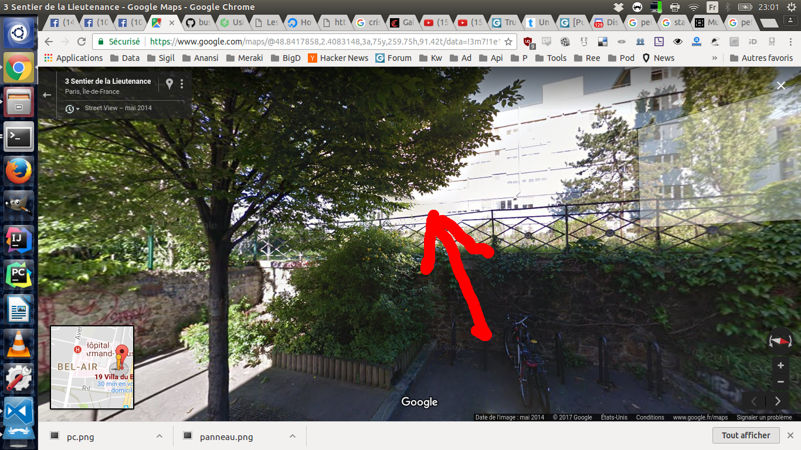
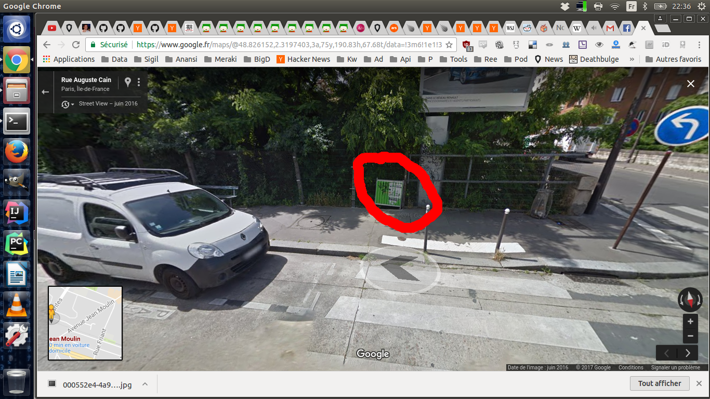

So the petite ceinture the urbex spot an abandonned railroad that is a must see in paris.
Some pic of it : https://www.google.fr/search?q=petite+ceinture+paris&source=lnms&tbm=isch&sa=X&ved=0ahUKEwjGr8-c3ZjVAhWHAcAKHSekC-sQ_AUICigB&biw=1301&bih=654
So the first spot to go there is here :
https://www.google.com/maps/place/19+Villa+du+Bel+air,+75012+Paris,+France/@48.8417819,2.4063933,17z/data=!3m1!4b1!4m5!3m4!1s0x47e6726250736e9b:0x41e459b2533f648c!8m2!3d48.8417784!4d2.4085873?hl=fr&authuser=0
You just have to go over the fence here :

when you are front of the fence the best way os the right of the rairoad to visit.
So the second spot (more beautiful ) is here :
https://www.google.fr/maps/place/Rue+Auguste+Cain,+75014+Paris/@48.825962,2.3184099,17z/data=!3m1!4b1!4m5!3m4!1s0x47e671ad434b3235:0xdd2a021eae868711!8m2!3d48.8259585!4d2.3206039
You have to go trhough the fence there is a hole in it :

and go left when you have the hole behind you on the railroad.